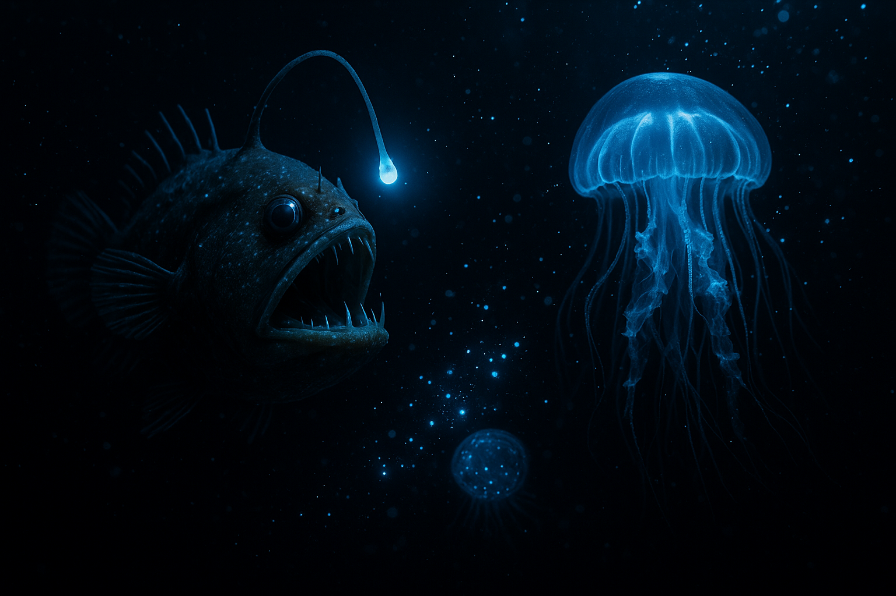
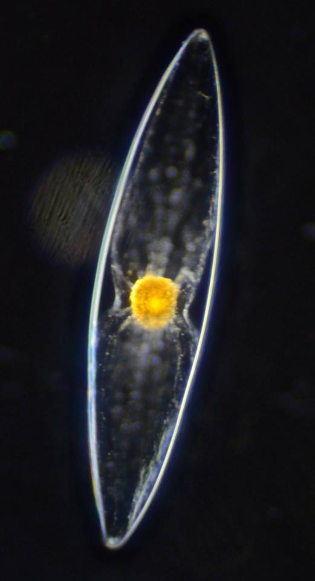

Life That Makes Its Own Light
On a summer evening, you might catch fireflies blinking in your backyard. It's charming — a novelty. But in the deep ocean, bioluminescence isn't a novelty. It's everywhere. It's how life communicates, hunts, hides, and survives in a world of perpetual darkness. Some scientists estimate it's the most common form of communication on Earth. And almost none of it happens on land.
The core chemistry: Luciferin + luciferase + oxygen = light. Simple enough. But this reaction has evolved at least 40 separate times across the tree of life. In fish alone, over 1,500 species glow. The deep sea didn't just discover bioluminescence — it became addicted to it.
Most marine bioluminescence is blue-green. Not by accident — blue light travels farthest underwater, and almost every marine organism can only see blue-green anyway. They literally can't process yellow, red, or violet. (The ocean looks like a rave because that's the only colors that work.)
Some organisms carry their own luciferin. Others acquire it through diet — the Hawaiian bobtail squid, for instance, has a light organ colonized by bioluminescent bacteria within hours of birth. The bacteria get a home; the squid gets to glow. Symbiosis at its finest.
Then there's the photoprotein trick. Some organisms bundle luciferin with oxygen in a pre-packaged "bomb" — a photoprotein — that explodes with light the moment calcium shows up. One signal, one flash. No hesitation.
Here's the fascinating asymmetry: bioluminescence evolved at least 40 times independently in marine organisms. On land? Basically just fireflies, some fungi, and a few niche cases. Why?
Because on land, there's usually already light. Sunlight. Moonlight. Streetlights. Glowing offers less advantage when the environment isn't pitch black 24/7. But in the deep ocean — below 200 meters where sunlight doesn't reach — darkness is absolute. Light becomes a superpower.
The irony: Land creatures invented electricity, streetlights, and phone screens — and now we're blinding fireflies with light pollution. The ocean's darkness made bioluminescence valuable. Our cities made it scarce.

Single-celled organisms, barely visible to the eye, but when they bloom in dense layers near the surface, they turn the ocean into a light show. When waves break or boats cut through, every cell flashes in unison — blue-green sparks that fade in milliseconds. San Diego had a massive bloom in 2020 that lit up the coastline like a nightclub.
They also have a circadian rhythm. At dusk, cells start producing the chemicals. At dawn, they stop. The ocean literally goes dark when the sun rises.
Only 42–56 cm long. Covered in photophores on its belly that emit a constant blue glow — except for a dark "collar" around its throat. That collar, scientists believe, mimics the silhouette of a small fish when seen from below. A lure. The rest of the glowing body blends into the downwelling light above, erasing its shadow — a technique called counter-illumination camouflage.
When something approaches the fake fish silhouette, the cookiecutter shark attaches with its suction cup lips and uses its bandsaw-like lower teeth to gouge out a circular chunk of flesh. hence the name. It has attacked submarines, undersea cables, and — rarely but memorably — humans.
The poster child of deep-sea horror, and for good reason. A dangling bioluminescent lure — like a fishing rod come to life — protrudes from its head. The light attracts curious prey right into its enormous toothy mouth. Some anglerfish species have a bonus: the lure pulses with different patterns depending on the species, a form of Morse code in the dark.
The male, in many species, is a dwarf — permanently fused to the female's body, sharing her blood supply, reduced to essentially a sperm-producing appendage. Romantic.
Vampyroteuthis infernalis — "vampire squid from hell." Despite the name, it doesn't drink blood. It's a deep-sea survivor that thrives where oxygen is nearly absent. It has the largest eyes relative to body size of any animal, and it's covered in photophores that can produce dazzling displays.
When threatened, it doesn't ink — it squirts sticky bioluminescent mucus that disorient predators. The light clings and flashes, buying time to escape. In the darkness, a flash of light becomes a weapon. Or a smoke screen.
Fireflies are the exception that proves the rule. Almost all major bioluminescent organisms are marine. The dominant theory: the deep ocean is perpetually dark, making light valuable for everything from avoiding predators to finding mates. On land, darkness is temporary — night falls, but dawn comes. And during the day, bioluminescence is pointless.
There are a few land exceptions — the Railroad worm (a beetle larva) glows red from its head and green along its body simultaneously, using different luciferases. But they're rare. Fossils tell us bioluminescence evolved in marine organisms over 400 million years ago, long before life crawled onto land.
The kicker: Bioluminescence may be Earth's oldest communication system — older than language, older than eyes, older than anything we might have used to send signals into space. We built the Voyager Golden Record as our message in a bottle. Life built bioluminescence as its own, for over 400 million years.
We've borrowed bioluminescence for science in ways the deep sea never intended: